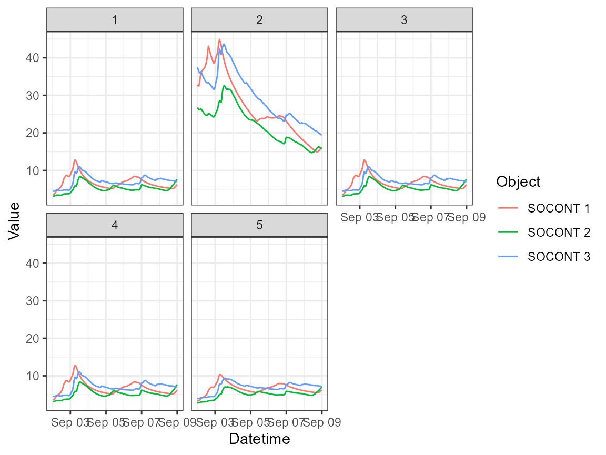

This example shows how to run multiple RS Minerve models with different parametersets.
The tutorial is adapted from Visual Basic scripts provided by Javier Fluixa Sanmartin (CREALP).
Install R, RTools, RStudio, RSMinerve and the R package rClr (see README for instructions and links).
Copy this vignette to your local computer and adapt the paths.
Open the model in and load & link the data base with the model objects. If you don’t know how to do this please follow the examples in the RS Minerve User Manual prior to continuing with this tutorial.
Open the Selection and plots tab by clicking on its icon in the in the modules toolbar. Define a selection of model results to visualize (here we define two result groups: DischargeGlacier and SnowWaterEquivalent. Save the model.
library(RSMinerveR)
library(rClr)
#> Loading the dynamic library for Microsoft .NET runtime...
#> Loaded Common Language Runtime version 4.0.30319.42000
library(tidyverse)
#> -- Attaching packages --------------------------------------- tidyverse 1.3.1 --
#> v ggplot2 3.3.4 v purrr 0.3.4
#> v tibble 3.1.2 v dplyr 1.0.7
#> v tidyr 1.1.3 v stringr 1.4.0
#> v readr 1.4.0 v forcats 0.5.1
#> -- Conflicts ------------------------------------------ tidyverse_conflicts() --
#> x dplyr::filter() masks stats::filter()
#> x dplyr::lag() masks stats::lag()
library(lubridate)
#>
#> Attaching package: 'lubridate'
#> The following objects are masked from 'package:base':
#>
#> date, intersect, setdiff, union
library(R.utils)
#> Loading required package: R.oo
#> Loading required package: R.methodsS3
#> R.methodsS3 v1.8.1 (2020-08-26 16:20:06 UTC) successfully loaded. See ?R.methodsS3 for help.
#> R.oo v1.24.0 (2020-08-26 16:11:58 UTC) successfully loaded. See ?R.oo for help.
#>
#> Attaching package: 'R.oo'
#> The following object is masked from 'package:R.methodsS3':
#>
#> throw
#> The following objects are masked from 'package:methods':
#>
#> getClasses, getMethods
#> The following objects are masked from 'package:base':
#>
#> attach, detach, load, save
#> R.utils v2.10.1 (2020-08-26 22:50:31 UTC) successfully loaded. See ?R.utils for help.
#>
#> Attaching package: 'R.utils'
#> The following object is masked from 'package:tidyr':
#>
#> extract
#> The following object is masked from 'package:utils':
#>
#> timestamp
#> The following objects are masked from 'package:base':
#>
#> cat, commandArgs, getOption, inherits, isOpen, nullfile, parse,
#> warnings
# Adapt path in dir_RSM_install to your local installation of RSMinerve.
dir_RSM_install <- "C:/Program Files (x86)/RS MINERVE"
clrLoadAssembly(file.path(dir_RSM_install, 'log4net.dll'))
clrLoadAssembly(file.path(dir_RSM_install, 'Microsoft.Practices.Prism.Mvvm.dll'))
clrLoadAssembly(file.path(dir_RSM_install, 'RSMinerve.RS.dll'))
clrLoadAssembly(file.path(dir_RSM_install, 'RSMinerve.DB.dll'))
clrLoadAssembly(file.path(dir_RSM_install, 'RSMinerve.Base.dll'))
model_file <- if (file.exists("../inst/extdata/Tutorial_Model.rsm")) {
"../inst/extdata/Tutorial_Model.rsm"
} else {
"https://raw.githubusercontent.com/hydrosolutions/RSMinerveR/blob/main/inst/extdata/Tutorial_Model.rsm"
}
input_dataset <- if (file.exists("../inst/extdata/Tutorial_DataMeteo.dsx")) {
"../inst/extdata/Tutorial_DataMeteo.dsx"
} else {
"https://raw.githubusercontent.com/hydrosolutions/RSMinerveR/blob/main/inst/extdata/Tutorial_DataMeteo.dst"
}
parameter_file <- if (file.exists("../inst/extdata/Tutorial04_Parameters_1.txt")) {
"../inst/extdata/Tutorial04_Parameters_"
} else {
"https://raw.githubusercontent.com/hydrosolutions/RSMinerveR/blob/main/inst/extdata/Tutorial04_Parameters_"
}
parameter_file <- "C:/Users/bea/Documents/test_rsminerve/RSM_Scripts/Example VBS/Outputs/test_writeRSMParameters_"
ic_file <- if (file.exists("../inst/extdata/Tutorial_IC.txt")) {
"../inst/extdata/Tutorial_IC.txt"
} else {
"https://raw.githubusercontent.com/hydrosolutions/RSMinerveR/blob/main/inst/extdata/Tutorial_IC.txt"
}
saveDataInDstFile <- TRUE
# The RS Minerve documentation describes the date format to be "%d.%m.%Y"
# but on some systems you will have to use "%m.%d.%Y". An error message
# about non-overlapping database and simulation time will give you the hint.
start_date <- "09.02.2013 00:00:00" # format = "%m.%d.%Y %H:%M:%S"
end_date <- "09.09.2013 00:00:00" # format = "%m.%d.%Y %H:%M:%S"
simulationTimeStep <- "600"
recordingTimeStep <- "3600"
timeStepUnit <- "Seconds"The paths for the result files need to be full paths. Below are example paths. You’ll need to adapt these.
results_savePath <-
"C:/Users/<username>/Documents/scriping_rsm/tutorial04-results_"
presimreport_path <-
"C:/Users/<username>/Documents/scriping_rsm/tutorial04-preSimuReport.txt"
postsimreport_path <-
"C:/Users/<username>/Documents/scriping_rsm/tutorial04-postSimuReport.txt"
ic_save_folder <-
"C:/Users/<username>/Documents/scriping_rsm"
params <- NULL
for (f in c(1:5)) {
full_parameter_file <- base::paste0(parameter_file, f, ".txt")
temp <- readRSMParameters(full_parameter_file)
temp <- mutate(temp, "Parameter set" = f)
params <- rbind(params, temp)
}
params |>
filter(Object == "SOCONT") |>
ggplot() +
geom_point(aes(`Parameter set`, Values, colour = Name)) +
facet_wrap("Parameters", scales = "free_y") +
theme_bw()
params <- params |>
mutate(Values = ifelse((`Parameter set` == "2" & Parameters == "Tcp1 [deg C]"),
0.01, Values))
params <- params |>
mutate(Values = ifelse((`Parameter set` == "3" & Parameters == "Tcp1 [deg C]"),
0.05, Values))
params <- params |>
mutate(Values = ifelse((`Parameter set` == "4" & Parameters == "Tcp1 [deg C]"),
0.1, Values))
params <- params |>
mutate(Values = ifelse((`Parameter set` == "5" & Parameters == "Kr [m1/3/s]"),
Values/2, Values))
params |>
filter(Object == "SOCONT") |>
ggplot() +
geom_point(aes(`Parameter set`, Values, colour = Name)) +
facet_wrap("Parameters", scales = "free_y") +
theme_bw()
parameter_file_edit <- "C:/Users/bea/Documents/test_rsminerve/RSM_Scripts/Example VBS/Outputs/test_writeRSMParameters_edit"
writeRSMParameters(params, paste0(parameter_file_edit, ".txt"))
#> NULLThe commands allow to call the Visual Basics commands documented in the RS Minerve Technical Manual. The calls return NULL when successful. Check your local paths to see if the output files have been created.
# Define a clr task
rsm <- clrNew("RSMinerve.RS.Task")
# Start-up the model
clrCall(rsm, "Start", model_file)
#> NULL
# Load data
clrCall(rsm, "LoadDatasetAndSetDates", input_dataset, TRUE, TRUE)
#> NULL
# Set simulation parameters
clrCall(rsm, "SetDates", start_date, end_date)
#> NULL
# SetSimulationTimeStep and SetRecordingTimeStep require characters
clrCall(rsm, "SetSimulationTimeStep", simulationTimeStep, timeStepUnit)
#> NULL
clrCall(rsm, "SetRecordingTimeStep", recordingTimeStep, timeStepUnit)
#> NULL
# Load initial conditions from file and copy file
clrCall(rsm, "LoadInitialConditionsFromFileAndCopyFile", ic_file, ic_save_folder)
#> NULL
# Load parameters from file & run the model
for (f in c(1:5)) {
full_parameter_file <- base::paste0(parameter_file_edit, "_", f, ".txt")
full_save_results_file <- base::paste0(results_savePath, f, ".dsx")
clrCall(rsm, "LoadParametersFromFile", full_parameter_file)
clrCall(rsm, "Simulate")
clrCall(rsm, "SaveFullResultsAs", full_save_results_file,
saveDataInDstFile)
}
# Stop task
clrCall(rsm, "Stop")
#> NULL
# Calculate the number of time steps to read for each model component, i.e. the
# chunk size. Including the header of each chunk.
chunk_size <- getChunkSize(
lubridate::as_datetime(start_date,format = "%m.%d.%Y %H:%M:%S"),
lubridate::as_datetime(end_date, format = "%m.%d.%Y %H:%M:%S"),
recordingTimeStep
)
result <- NULL
for (i in c(1:5)) {
full_save_results_file <- base::paste0(results_savePath, i, ".dsx")
temp <- readResultDXT(full_save_results_file, chunk_size)
temp <- temp |>
dplyr::mutate(`Parameter set` = as.character(i))
result <- rbind(result, temp)
}
result |>
filter(Variable == "SOCONT:Qtot") |>
ggplot() +
geom_point(aes(Datetime, Value, colour = `Parameter set`,
size = `Parameter set`, shape = `Parameter set`),
alpha = 0.3) +
facet_wrap("Object", ncol = 1) +
theme_bw()
#> Warning: Using size for a discrete variable is not advised.